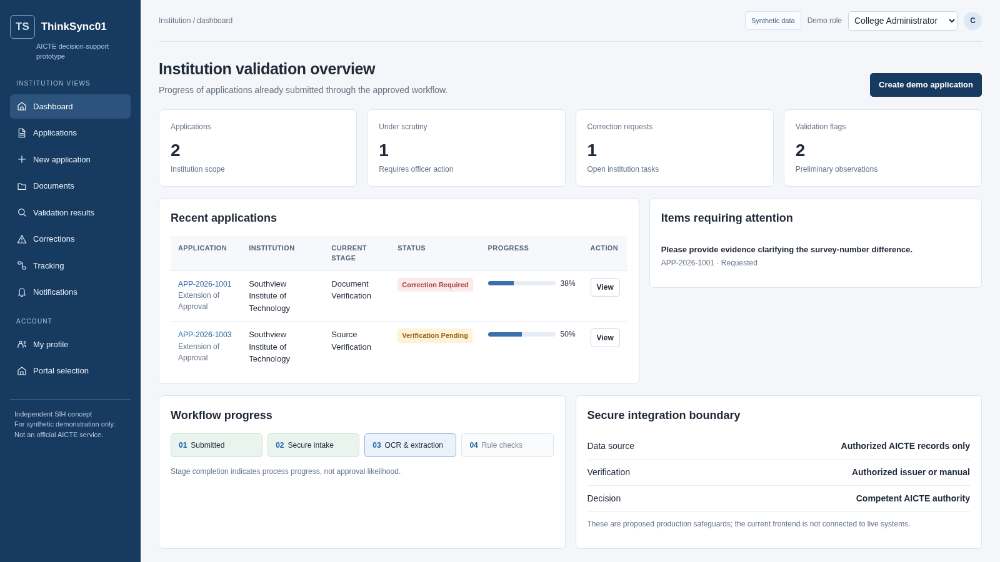
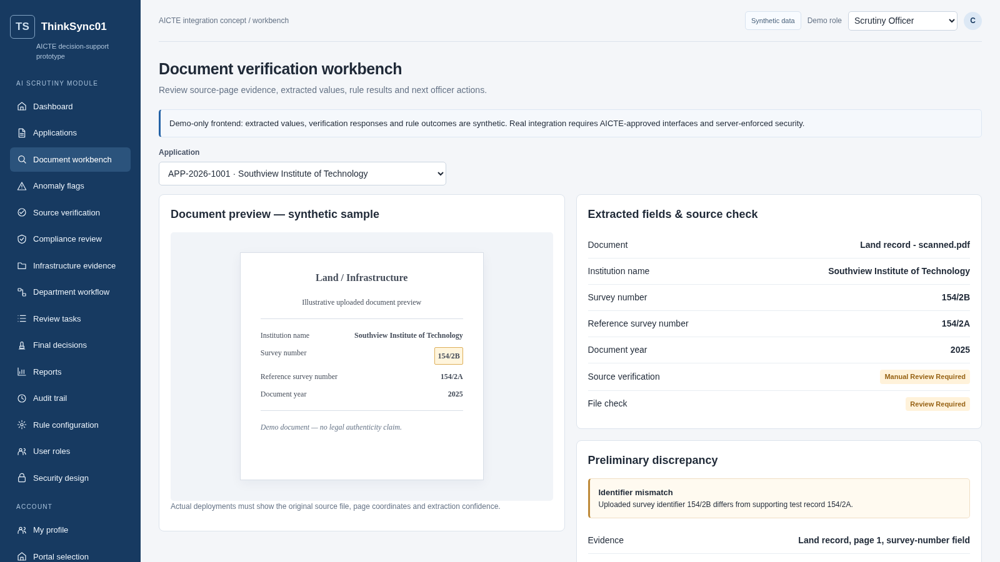

AI-Powered Application Validation, Document Authentication and Regulatory Compliance Verification
ThinkSync01 · Integrated AI scrutiny concept for existing AICTE approval workflows
SIH 2026 · Software · Smart Automation
Institution validation overview
Proposed integrated view

Officer document workbench
Evidence-linked review

Document extraction
Configurable rules
Authorized-source workflow
Human review
Security & audit